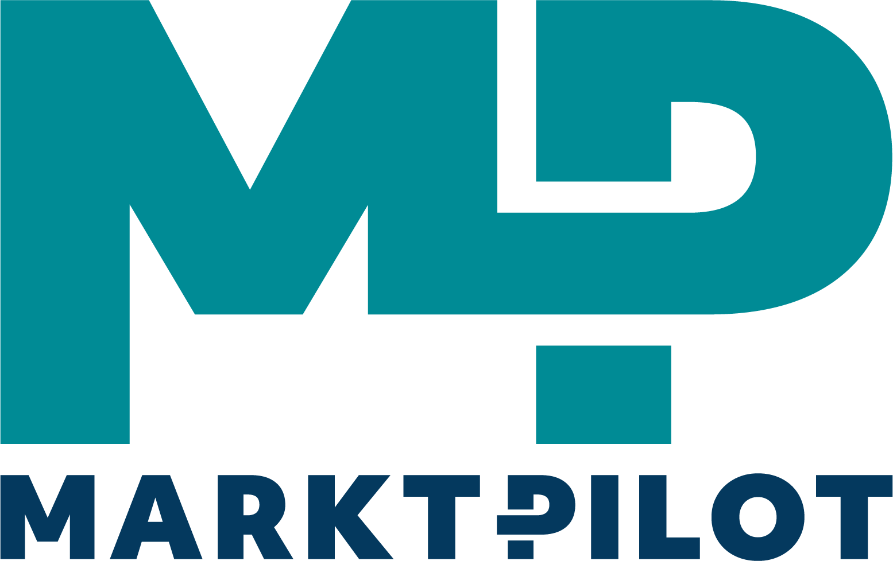

Head of Product
— &Open&Open is the global gifting platform for companies that care. On brand, on point, on time.
I lead Product and Design at &Open, scaling the business and building towards our vision for thoughtful, impactful gifting. Our platform sends gifts globally at scale, while our team guides the process with taste, thought and attention to detail.
As a B Corp-certified company, we're all about less waste, more impact. At the end of the day, it's not how much you send, it's how you make people feel that matters.
- Defined product strategy and roadmap.
- Hired and built up the Product and Design team, including defining career paths and performance management.
- HubSpot merch store launched.

Director, Product
— MARKT-PILOTBuilt the Product and Design team from scratch, and drove the transformation of a struggling R&D organisation. Set our product direction and strategy, development methodology, customer co-creation programme, integration with GTM org etc.
- Created and hired Product and Design team (8 direct reports).
- Defined product strategy and roadmap.
- Defined product development methodology.
- Customer co-creation programme.
- R&D<>GTM collaboration and rituals.
- Product career paths and performance management.
- MP ONE, a new and differentiated approach to pricing intelligence and execution (in beta, launching Jan 2026).
Director, Product Management
— SoSafeTransformed R&D department into a high impact team — defined product strategy and methodology, process simplification and improvement, performance management and hiring, and cultural change. Responsible for Product Management and Content teams (11 direct reports), and recognised with SoSafe's 'Lighthouse Leader Award'.
- R&D transformation.
- Product vision and strategy.
- Product career paths and performance management.
- Conceived of and launched Human Risk OS.
- Personalised Learning.
- Contributed to 4X ARR growth in 2 years.
- Partnered with Forrester to define the 'human risk management' category and Q3 2024 Wave.
Group Product Manager, Messenger
— IntercomResponsible for Intercom's flagship product — the Messenger — with over 4 billion consumer interactions and conversations globally each year. Grew the team to ~50 people across 4 teams, making the Messenger a renewed strategic priority for the company.
Defined the vision and strategy for Intercom's Next Gen Messenger — the biggest, most ambitious update to Intercom's Messenger in over 5 years, aimed at increasing customer acquisition and retention. Also kickstarted the expansion of outbound messaging features by launching Mobile Carousels and other in-product messaging tools to build a differentiated position in the market.
- 3X increase in mobile business.
- 5X increase in self-serve support rates.
- 3X increase in engagement rates.
- 68% reduction in first response times.
- Hired Messenger Product team and led the group.
- Defined product strategy and roadmap for my group.
- R&D<>GTM collaboration and rituals.
Product Manager
— NewsWhipNewsWhip is the only real-time media monitoring platform that predicts the stories and topics that will matter in the hours ahead, giving communications professionals the clarity they need for quick and confident decisions.
Responsible for strategy, roadmapping, research, problem exploration, solution definition, and execution for net new innovation and products. Transformed company ways of working, building greater transparency and alignment across the business.
- Generated $1M ARR in one year with the Syndication API.
- Decreased churn rates with key workflow integrations.
- NewsWhip Chrome extension.
- NewsWhip Sheets for instant social data.
Product Manager, Mobile
— ZendeskZendesk is a service-first CRM company that builds software designed to improve customer relationships.
Mobile products had been without leadership for six months, and lacked customer focus, direction, and structure. Responsible for remediating this unhealthy setup. Responsible for mobile strategy, roadmapping, research, problem exploration, solution definition, and execution.
- 7X growth of Chat SDK.
- 2X growth of Support SDK.
- PM for 3 teams simultaneously.
- Partnership with Fabric to increase distribution.
Director, Service Improvement
— KingOwner of Player Operations team, responsible for processes and technology used to support and engage King's players (eg. Candy Crush Saga). Managed Data Scientists, Product Managers, Business Analysts, and Software Engineers.
Defined new support strategies that are now ubiquitous in casual gaming; in-game support, community forums, behaviour-based profiling and segmentation (instead of just pay), churn detection, responsible gaming support processes etc.
- Scaled support services to handle >100k interactions per month with a team of just 50 agents.
- VIP programme.
- Responsible gaming programme.
- Voice of the player initiative.
Business Analyst
— ThoughtWorksThe ThoughtWorks Technology Radar is ThoughtWork's opinion on what's hot (and not) in tech each quarter, and was previously delivered as a PDF download. In this project I worked with an Engineer and Designer to build a digital experience. It was a hit, and in the years since it was launched it has remained largely unchanged.
I also worked with the UK Government's Redundancy Payments Service (RPS) to bring their claims process to the web, replacing the expensive and time consuming paper and OCR process that existed previously. This was also the first time that the RPS had used an agile approach to software delivery, and a large part of my role was pairing with the Product Owner and Business Analysts to help them gain the skills to continue the work when ThoughtWorks' engagement came to an end.

Manager
— AccentureDuring 6+ years at Accenture I worked on and led a plethora of challenging financial services business, software, and infrastructure programmes. That meant working for some of the world's largest retail and commercial banks, in the UK and abroad.
- Barclays Bank Faster Payments scheme.
- Lloyds Banking Group credit card re-platforming.
- Lloyds Banking Group business intelligence data warehouse.
- Lloyds Banking Group new operating model for international payments and CHAPS.
- Lloyds Banking Group merger — sanctions operating model and implementation.
- Royal Bank of Scotland global infrastructure renewal programme.
- Lloyds Banking Group AML programme management.